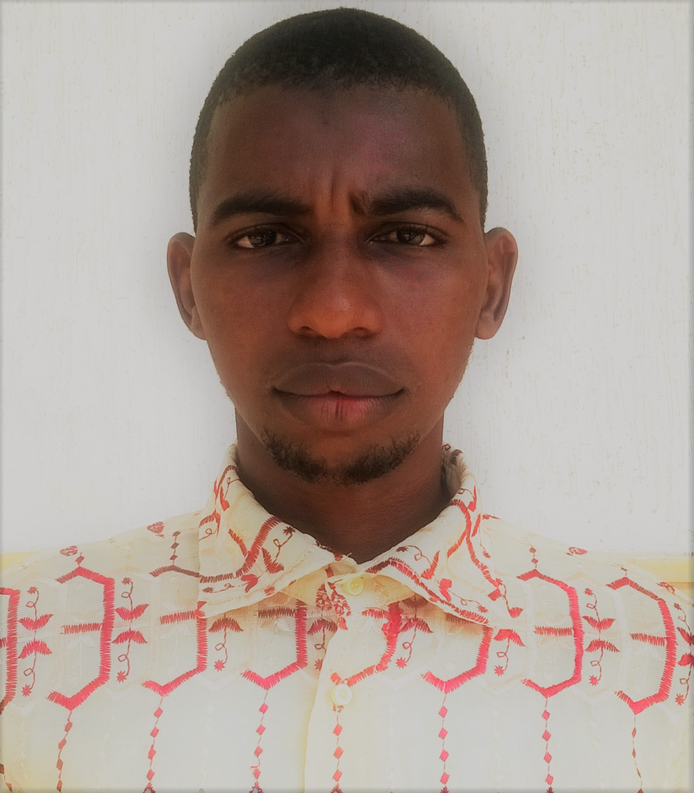

Détails personnels
Nom
Adresse e-mail
Numéro de téléphone
Adresse
Baldé Mamadou Diouldé
mbalde07@gmail.com
0506033526
Adjamé 220 Lgt

Expérience professionnell
Nov. 2018 - Déc. 2019
Septembre 2017
Oct. 2017 - Nov 2017
Stagiaire en Analyse Structurale,et
Microstructurale sur le site de San,
en tant
qu’explorateur (reconstitution des déformations
et des forces
géologique, prélèvement et analyse
des échantillons)
Stagiaire en Analyse Stratigraphique et
Biostratigraphique des Roches
Sédimentaires du
bassin sur le site d’Aboisso, en tant qu’explorateur
(prélèvement, classification et analyse Stratigraphique
et
Biostratigraphique des échantillons)
Stagiaire en Pétrographie et cartographie des
formations géologiques
de Toumodi sur le site de
Toumodi